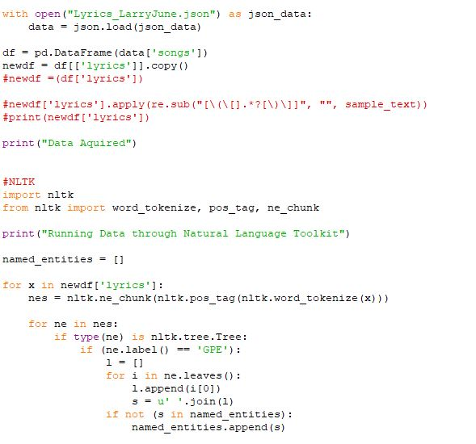
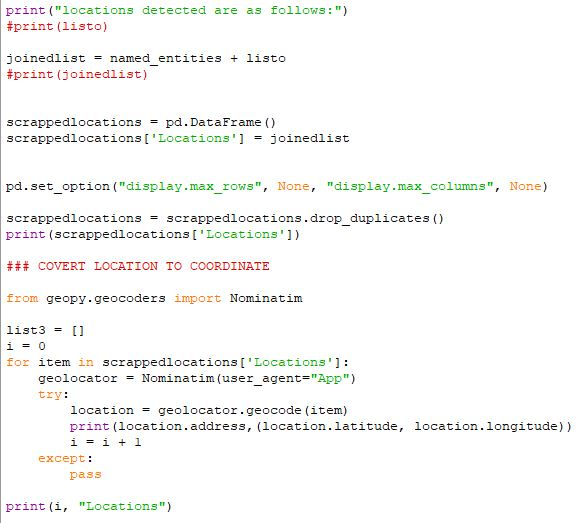

Pandas Lyric Location Analyzer
Personal Projects
Sept 2022
Intro
Have you ever wondered what locations your favorite artist talks about in their music? Do they like to dream about exotic places far away? Or do they sing mostly about places near their hometown? Well, I wrote a Python program to find out.
How it works
First, my python program interfaces with the Genius API to download all of an artist's song lyrics. Genius is one of the larger lyric databases our there, so I felt it would do well for this project. The data is saved as a json, which is then opened and read using Pandas, where the lyrics are stored in a new dataframe. Next, I use the natural language toolkit to analyze the words in each song for location data. Anything that is flagged as a location is appended onto a new list. This list is then run through another program which looks up each location and returns their coordinates. These coordinates are then displayed on a map for the end user to see.
Considerations
There are many issues with this small project. First, a lot of rappers and singers abbreviate locations, like saying 'Frisco instead of San Francisco. When this is run through the location lookup script, it can throw off the data points by a lot. Frisco Texas is very different from San Francisco, California. Also, the script is really slow to run. These are issues I have to fix, but this is still kind of a WIP for now. Once I get around to it, maybe ill hash it out a little more and host it online somewhere. Stay tuned!

